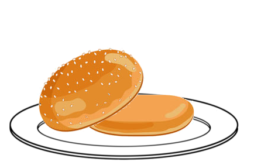

Burger Time



Instructions
-
Every Round Begins with 3 uncooked burger patties fresh out of the freezer, er I mean from the butcher.
-
Your first move will be to push each patty to a grill for cooking.
-
Each turn a burger is on the grill you will have the option to either move it to the next stage or let
it sit for another turn to cook longer
1 turn on the grill will result in a rare burger, 2 turns in a medium and 3 a well done.
-
From the grill you will have the ability to add cheese, or leave it plain to fulfill your customers
desires.
-
After prepping the burger send it to the customer, or to burger hell to atone for your sins as a cook.
-
If you correctly delivered the customers order you will be rewarded with the knowledge that there is
always another hungry mouth to feed.
If you do not, despair in the fact that there are still mouths to feed, and you're a failure.
History